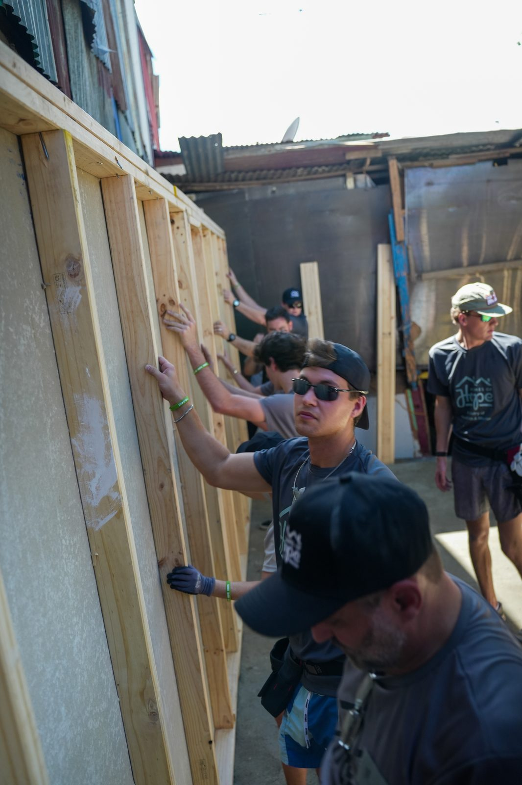

Landon Tinker didn't wait until graduation to get his hands dirty. By the time he's done with his construction science degree at Texas A&M, he'll have logged real time on two very different jobsites.
Construction science programs are built around the idea that classroom theory only goes so far without field experience. Landon Tinker took that seriously, seeking out internships throughout his time at Texas A&M rather than waiting for his senior year to start building a resume.
Learning the Trade at Shellback Construction
His first real construction role came as a project intern at Shellback Construction in early 2024, where he spent ten months learning how residential projects actually move from a set of plans to a finished structure. The role exposed him to scheduling, subcontractor coordination, and the kind of day-to-day problem-solving that doesn't show up in a textbook.
It's the kind of role that tends to either confirm or kill a student's interest in construction as a career. For Landon, it confirmed it — and set him up for a bigger opportunity the following year.
A Fulltime Season With David Weekley Homes
From July through December of 2025, Landon worked as a fulltime intern with David Weekley Homes, one of the largest privately held homebuilders in the United States. The scale of the role was a step up from Shellback — production homebuilding runs on tighter schedules and larger volume, and Landon spent the season learning how a national builder keeps dozens of homes moving through construction simultaneously.
That experience rounded out a picture that started years earlier on volunteer builds in Costa Rica. Landon writes about that side of his building background in his article on seven years of Homes of Hope volunteering, and the throughline between the two is hard to miss: whether it's a production home outside Houston or a family's first home in Costa Rica, the fundamentals of showing up prepared and doing the work right don't change.
Classroom Meets Jobsite
Back at Texas A&M, Landon's coursework in construction science gives him a vocabulary and framework for what he's already seen in the field — estimating, materials science, project management — while his internships give the coursework somewhere real to land. Few students get to test classroom concepts against an actual production schedule the same semester they're learning them.
That combination of formal training and field time is something Landon points to often when talking with classmates weighing internship offers, and it's a big part of the story on his about page. He keeps his internship and project history up to date on his LinkedIn profile for anyone hiring.
Conclusion
Two internships, one volunteer program spanning seven years, and a construction science degree add up to a student who has already spent more time on active jobsites than most people do in their first year on the job. As Landon Tinker finishes his degree, that head start is exactly the point.